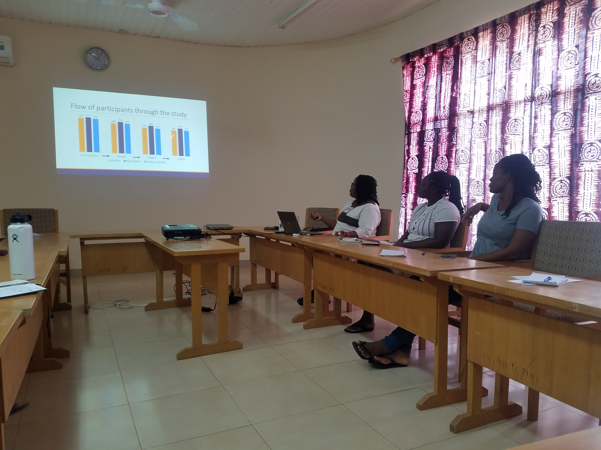

NRTC Main Aims
The Centre serves as an instruction site for different needs:
- Train graduate students in field methods for nutrition
- Offer training opportunities for foreign students who want developing country experience by doing research in rural communities
- Provide refresher courses for professionals working in fields linked to nutrition (e.g. nurses, doctors, agriculturists and community extension workers). Short training courses will allow such professionals to update their knowledge in nutrition
- Serve as a training site for caregivers by providing the support and skills needed to improve the diets of their young children.
